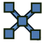

Cables Workbench/pl
Wprowadzenie
Środowisko pracy  Kable to zestaw narzędzi służący do modelowania instalacji elektrycznych w projektach architektonicznych. Zostało stworzone, aby ułatwić prowadzenie kabli wewnątrz budynków lub innych obiektów oraz budowanie modeli kabli z możliwością tworzenia połączeń pojedynczych przewodów. Jest to zewnętrzne środowisko pracy.
Kable to zestaw narzędzi służący do modelowania instalacji elektrycznych w projektach architektonicznych. Zostało stworzone, aby ułatwić prowadzenie kabli wewnątrz budynków lub innych obiektów oraz budowanie modeli kabli z możliwością tworzenia połączeń pojedynczych przewodów. Jest to zewnętrzne środowisko pracy.
Ten zestaw narzędzi może być używany do tworzenia skrzynek elektrycznych lub innych gotowych do użycia elementów elektrycznych (mamy nadzieję, że lista elementów zostanie w przyszłości rozszerzona). Elementy te można łączyć za pomocą w pełni parametrycznych kabli o różnych profilach, liczbie żył i grubościach. Dostępnych jest kilka predefiniowanych profili kabli, ale istnieje również możliwość tworzenia niestandardowych profili za pomocą prostego pliku csv.
Modele zbudowane przy użyciu tego środowiska roboczego umożliwiają łatwe przestawianie elementów bez przerywania połączeń. Kable mogą dostosowywać swój kształt do nowych pozycji. Jednak ta funkcja nie jest jeszcze idealna.
Ten zestaw narzędzi ma na celu zachowanie kompatybilności z środowiskiem BIM (obiekty bryłowe tworzone tutaj powinny mieć te same podstawowe atrybuty i właściwości co inne obiekty BIM: materiały, typ IFC oraz atrybuty IFC itp.), jednak może być stosowany także do zadań innych niż projektowanie architektoniczne. Począwszy od wersji 0.3.0 środowisko stało się również bardziej odpowiednie do modelowania połączeń między płytkami PCB, wewnątrz maszyn itp. Umożliwia tworzenie własnych bibliotek złącz, obudów i urządzeń elektrycznych (każda pomoc przy tworzeniu na przykład zestawu gotowych złączy będzie mile widziana).

Przykład puszek ściennych i kabli
Wersja animowana

Przykład płaskiego kabla z trzema żyłami:
Kształt wielomateriałowego kabla i jego bazowa polilinia, profil oraz polilinie podrzędne.


Po lewej: przykład rozkładu puszki kablowej z MCB.
Po prawej: przykład kabla zakończonego złączami
Instalacja
To środowisko pracy może być zainstalowane z poziomu  Menedżera dodatków. Zobacz również stronę Instalacja zewnętrznych środowisk pracy dla samodzielnej instalacji.
Menedżera dodatków. Zobacz również stronę Instalacja zewnętrznych środowisk pracy dla samodzielnej instalacji.
Przybory
Narzędzia do kabli są podzielone na kilka grup w zależności od ich przeznaczenia.
Narzędzia do tworzenia i modyfikacji polilinii
 Przewód giętki: Tworzy obiekt WireFlex rozciągnięty między dwoma lub większą liczbą wybranych wierzchołków/obiektów.
Przewód giętki: Tworzy obiekt WireFlex rozciągnięty między dwoma lub większą liczbą wybranych wierzchołków/obiektów.
 Dodaj wierzchołek: Tworzy dodatkowy wierzchołek na wybranej krawędzi obiektu WireFlex.
Dodaj wierzchołek: Tworzy dodatkowy wierzchołek na wybranej krawędzi obiektu WireFlex.
 Usuń wierzchołek: Usuwa wybrany wierzchołek obiektu WireFlex.
Usuń wierzchołek: Usuwa wybrany wierzchołek obiektu WireFlex.
 Dołącz wierzchołek: Dołącza wierzchołek obiektu WireFlex do zewnętrznego wierzchołka/obiektu.
Dołącz wierzchołek: Dołącza wierzchołek obiektu WireFlex do zewnętrznego wierzchołka/obiektu.
 Usuń dołączenie wierzchołka: Usuwa dołączenie wybranego wierzchołka obiektu WireFlex z zewnętrznego wierzchołka / obiektu.
Usuń dołączenie wierzchołka: Usuwa dołączenie wybranego wierzchołka obiektu WireFlex z zewnętrznego wierzchołka / obiektu.
 Dołącz przewód do terminala: Tworzy dołączenie końca przewodu do Terminala (wprowadzone w wersji 0.3.0).
Dołącz przewód do terminala: Tworzy dołączenie końca przewodu do Terminala (wprowadzone w wersji 0.3.0).
 Odłącz przewód od terminala: Usuwa dołączenie końca przewodu z Terminala (wprowadzone w wersji 0.3.0).
Odłącz przewód od terminala: Usuwa dołączenie końca przewodu z Terminala (wprowadzone w wersji 0.3.0).
 Ścieżka złożona: Tworzy nowy obiekt CompoundPath w oparciu o wybrane obiekty (wprowadzone w wersji 0.2.0). Tworzy obiekt przewodu w oparciu o grupę innych obiektów przewodów. Jego topologiczny kształt jest złożeniem kształtów przewodów lub kształtu pojedynczego przewodu.
Ścieżka złożona: Tworzy nowy obiekt CompoundPath w oparciu o wybrane obiekty (wprowadzone w wersji 0.2.0). Tworzy obiekt przewodu w oparciu o grupę innych obiektów przewodów. Jego topologiczny kształt jest złożeniem kształtów przewodów lub kształtu pojedynczego przewodu.
 Edycja kabla: Edytuje aktywny obiekt WireFlex (wprowadzone w wersji 0.2.0).
Edycja kabla: Edytuje aktywny obiekt WireFlex (wprowadzone w wersji 0.2.0).
Narzędzia do tworzenia kabli i innych gotowych elementów
 Profil kabla: Dodaje nowy profil kabla do bieżącego dokumentu.
Profil kabla: Dodaje nowy profil kabla do bieżącego dokumentu.
 Kabel: Dodaje nowy kabel w oparciu o wybrany przewód i profil.
Kabel: Dodaje nowy kabel w oparciu o wybrany przewód i profil.
 Kanał kablowy: Dodaje nowy kanał kablowy w oparciu o wybrany przewód (wprowadzone w wersji 0.2.0).
Kanał kablowy: Dodaje nowy kanał kablowy w oparciu o wybrany przewód (wprowadzone w wersji 0.2.0).
 Puszka kablowa: Dodaje nową parametryczną puszkę kablową.
Puszka kablowa: Dodaje nową parametryczną puszkę kablową.
 Złącze kablowe: Dodaje nowe parametryczne uniwersalne złącze kablowe.
Złącze kablowe: Dodaje nowe parametryczne uniwersalne złącze kablowe.
 Punkt oświetlenia: Dodaje nowy parametryczny uniwersalny punkt oświetlenia dla kabla.
Punkt oświetlenia: Dodaje nowy parametryczny uniwersalny punkt oświetlenia dla kabla.
 Urządzenie elektryczne: Dodaje nowe urządzenie elektryczne (wprowadzone w wersji 0.3.0).
Urządzenie elektryczne: Dodaje nowe urządzenie elektryczne (wprowadzone w wersji 0.3.0).
 Materiały kabli: Dodaje domyślny zestaw materiałów wielowarstwowych do bieżącego dokumentu.
Materiały kabli: Dodaje domyślny zestaw materiałów wielowarstwowych do bieżącego dokumentu.
Obiekty zależne
Tych obiektów nie można tworzyć bezpośrednio. Są zaprojektowane do współistnienia z obiektami Puszki kablowej, Złącza kablowego, Punktu oświetlenia lub Urządzenia elektrycznego w zależności od ich konfiguracji.
 Terminal kablowy: Zawiera parametryczny obiekt terminala kablowego (wprowadzone w wersji 0.3.0).
Terminal kablowy: Zawiera parametryczny obiekt terminala kablowego (wprowadzone w wersji 0.3.0).
-  Linie podparcia: Zawiera obiekt SuppLines (wprowadzone w wersji 0.3.0).
{kind=link}
Narzędzia pomocnicze
Te narzędzia są głównie używane do organizowania i upraszczania dołączeń innych obiektów. Mogą być też skutecznie używane z innymi środowiskami pracy.
 Punkt podparcia: Dodaje uniwersalny punkt podparcia.
Punkt podparcia: Dodaje uniwersalny punkt podparcia.
 Linia podparcia: Dodaje uniwersalną linię podparcia.
Linia podparcia: Dodaje uniwersalną linię podparcia.
 Dołącz w miejscu: Tworzy dołączenie bez zmiany globalnego umiejscowienia obiektu (wprowadzone w wersji 0.3.0).
Dołącz w miejscu: Tworzy dołączenie bez zmiany globalnego umiejscowienia obiektu (wprowadzone w wersji 0.3.0).
 Dezaktywuj dołączenie: Dezaktywuje dołączenie wybranych obiektów (wprowadzone w wersji 0.3.0).
Dezaktywuj dołączenie: Dezaktywuje dołączenie wybranych obiektów (wprowadzone w wersji 0.3.0).
Narzędzia zewnętrzne
 Przełącz siatkę: Zmienia widoczność siatki.
Przełącz siatkę: Zmienia widoczność siatki.
Uwagi
To środowisko pracy jest obecnie w fazie alfa. Możesz spodziewać się pewnych błędów, które mogą spowodować uszkodzenie modelu. Niektóre właściwości modeli mogą ulec zmianie w przyszłości i spowodować uszkodzenie modeli utworzonych w obecnej wersji. Strony wiki związane z tym środowiskiem pracy również mogą ulec znacznym zmianom w przyszłości. Wszelkie uwagi i nowe pomysły są mile widziane. Prosimy o przesyłanie uwag i zgłoszeń za pośrednictwem kanałów określonych w sekcji Bibliografia.
Opis podstawowego przebiegu pracy
- Utwórz punkty końcowe dla kabli, takie jak: Puszka kablowa lub Punkt oświetlenia i rozmieść je w przestrzeni 3D.
- Utwórz przewody bazowe łączące utworzone punkty końcowe za pomocą narzędzia Przewód giętki i rozmieść je w przestrzeni 3D za pomocą nadzędziLinie wsparcia lub Punkt wsparcia.
- Utwórz profile kabli odpowiednie dla projektu.
- Utwórz kable na podstawie istniejących przewodów bazowych i profili.
- Pokoloruj kable za pomocą predefiniowanych lub dostosowanych materiałów kablowych.
- Na koniec (opcjonalnie) połącz wybrane pojedyncze przewody kablowe za pomocą złączy kablowych.
Poradniki i przykłady
Przykładowe dokumenty FreeCAD zawierające kable:
- Przykłady dostarczane razem z kodem źródłowym.
Przykładowe animowane obrazy:
- Przykładowy prosty przepływ pracy
- Przykłady ruch przewodów elastycznych
- Przykładowe zastosowanie puszki kablowej
- Przykładowe zastosowanie złącza kablowego
Poradniki:
Wideo poradniki / przykłady
Bibliografia
- Autor:
- Kod źródłowy na GitHub: https://github.com/sargo-devel/Cables
- Forum FreeCAD: https://forum.freecad.org/viewtopic.php?t=94090
- Zgłaszanie błędów: Proszę zgłaszać błędy w repozytorium GitHub projektu